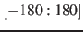

The complete rotation described by orientation can optionally be decomposed into two sub-rotations: one is a ``spin'' rotation around e, and the other a ``tilt'' rotation around an axis orthogonal to e.
The component spinAngle measures the angle of the ``spin'' sub-rotation around e.
This can be defined using the same options as the component orientation: atoms and refPositions.
In addition, spinAngle accepts the axis option:
-
axis
 Special rotation axis (Å)
Special rotation axis (Å)
Context: tilt, spinAngle
Acceptable values: (x, y, z) triplet
Default value: (0.0, 0.0, 1.0)
Description: The three components of this vector define (when normalized) the special rotation axis used to calculate the tilt and spinAngle components.
The component spinAngle returns an angle (in degrees) within the periodic interval
.
Note: the value of spinAngle is a continuous function almost everywhere, with the exception of configurations with the corresponding ``tilt'' angle equal to 180 (i.e. the tilt component is equal to
(i.e. the tilt component is equal to  ): in those cases, spinAngle is undefined. If such configurations are expected, consider defining a tilt colvar using the same axis e, and restraining it with a lower wall away from .
): in those cases, spinAngle is undefined. If such configurations are expected, consider defining a tilt colvar using the same axis e, and restraining it with a lower wall away from .
Jérôme Hénin
2015-03-03